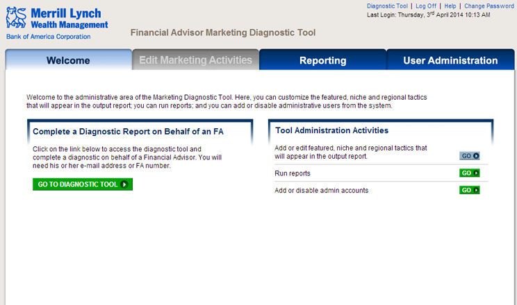

PowerMyLearning
PowerMyLearning is a free digital learning platform for K-12 students, parents, and educators, developed by the national nonprofit CFY. PowerMyLearning makes thousands of the most compelling publicly available digital learning activities from across the web easily accessible and usable. There are number of interesting features focused on Educators and Students that takes teaching and learning to whole another level. In addition Parents can motivate children to complete goals while monitoring their progress.
| Client : | CFY |
|---|---|
| Technologies of Note : | .NET MVC 4, MS SQL, jQuery, Knockout JS, Bootstrap, AmplifyJS, SOLR, HTML5, CSS3. |
| Vertical : | Education |
| Team-Size : | 20 |
| Target audience : | Students (K-12), Educators, Parent |
Comunitee
Comunitee.com is an exciting news platform that brings the concept of social organic news to consumers. It pulls news in real time from thousands of news sources spread across the globe in the form of RSS feeds. The news shown to the user is highly personalized - the system boasts of a unique algorithm that learns from the user and the user’s friend’s behavioral pattern and shows news that is of relevance to the user.
| Client : | Comunitee |
|---|---|
| Technologies of Note : | Mysql, Hibernate, Spring , Lucene, RSS , Jquery. |
| Vertical : | Social Media News |
| Team-Size : | 10 |
| Target audience : | News consumers, General audience |
Merriyl Lynch's
Merriyl Lynch's Field Marketing Outreach application provides a centralized way of tracking, sharing and reporting on their financial advisor's information. The outreach team can quickly make updates remotely as well as gather details on key FA data in aggregate and by defined segment parameters.
| Client : | Merriyl Lynch |
|---|---|
| Technologies of Note : | Java 1.5 platform with Spring and Hibernate, HTML, CSS, JQuery, JavaScript, Postgres and JBoss Application Server |
| Vertical : | Finance advisor tool |
| Team-Size : | 7 |
| Target audience : | Internal financial advisors |
Merrill Lynch’s
Merrill Lynch’s Field Marketing Diagnostic application provides an online tool in which FA/CA users will answer questions regarding their marketing efforts, analyze need for marketing tactics and receive customized recommendations.
| Client : | Merriyl Lynch |
|---|---|
| Technologies of Note : | Java 1.5 platform with Spring and Hibernate, HTML, CSS, JQuery, JavaScript, Postgres and JBoss Application Server |
| Vertical : | Finance advisor tool |
| Team-Size : | 7 |
| Target audience : | Internal financial advisors |
The KeyConnect
The KeyConnect application acts as a forum for the various target users of Elsevier to interact, share ideas and have conversation on their field and topics of interest. It integrates with Elsevier's ClinicalKey application to provide a social environment to interact with and research on medical terminologies and use Elsevier’s’ publications.
| Client : | KeyConnect |
|---|---|
| Technologies of Note : | Microsoft.Net Framework 4.0, SQL Server 2008, Windows 2003 Server SP1, IIS 7.0. |
| Vertical : | Health |
| Team-Size : | 8 |
| Target audience : | Physicians, librarians, Academician, users from Elsevier publications. |
SAM

SAM is a product primarily meant to be used by Sales representative, regional managers and national managers of pharmaceutical companies to allow them to keep in touch with physicians faster and easier. The platform helps the user to send messages to as many doctors as they need by choosing the format from several e-mail templates and customize them as per need. The product also allows the users to track their activity in form of measurable reports.
| Client : | Alexion Pharmaceuticals |
|---|---|
| Technologies of Note : | PHP 5.3.X,MYSQL 5.1, Symfony PHP framework (v1.4),ORM layer Doctrine v1.2. |
| Vertical : | Health |
| Team-Size : | 6 |
| Target audience : | Sales representatives in pharmaceutical companies and their managers, Physicians. |
Wiley

Wiley's Digital Calculus Learning Tool is a platform where teachers and student interact to teach and learn Calculus largely based on Matthew Leingang's book called University Calculus. The application allows instructors to create custom course books for their classes, upload different types of supplementary content, publish the course book to students, create and grade assignments and generate different types of intelligence reports. On the whole this is a robust and interactive Learning Management System equipped with a number of features to facilitate teaching and learning.
| Client : | Wiley |
|---|---|
| Technologies of Note : | .Net framework 4.0 (c#), JQuery 4.1, TinyMce, JSXGraph,Latex and Mathjax,MSSQL Server 2008 R2. |
| Vertical : | Education |
| Team-Size : | 12 |
| Target audience : | Calculus instructors and Calculus Students. |
Timesheet Management
The Timesheet Management System (TMS) is a product developed in house at Cardinal as part of it's larger Consultant Lifecycle Management strategy. The system is designed to automate the process of timesheet entry by Cardinal's consultants and the timely processing of submitted timesheets with minimal human errors.
It is a web driven approach along with the necessary checks and balances in place such as reminder notifications, automated emails and alerts for delayed timesheets for example.
| Client : | Cardinal technology solutiuns |
|---|---|
| Technologies of Note : | Flex MVC (Cairngorm 2.2.1), Actionscript 3.0, .NET Webservices/WebORB Remoting Services MySQL |
| Vertical : | HR & Social Media |
| Team-Size : | 7 |
| Target audience : | Cardinal Employees |
Spread Networks
The Spread Networks project is a highly customized content management system developed for one of the fastest growing low-latency trading network company. With milliseconds in mind, the platform trenched a new, direct route between New York and Chicago to provide financial firms with the infrastructure.
| Client : | The Spread Networks |
|---|---|
| Technologies of Note : | PHP 5 platform with Joomla CMS framework, Apache, MySQL 5.2, HTML, CSS, JavaScript and AJAX |
| Vertical : | CRM-Marketing |
| Team-Size : | 7 |
| Target audience : | Network Companies |
Prashn

Prashn is CardinalTS's Assessment Delivery and Intellect Measurement platform that was developed in-house to help our Sales and Recruitment specialists to qualify high quality consultants for our clients. Launch the app to learn more...
| Client : | Cardinal Technology Solution |
|---|---|
| Technologies of Note : | Java 1.5 platform with Spring and Hibernate frameworks, HTML, CSS, JavaScript, MySQL and JBoss Application Server |
| Vertical : | Education |
| Team-Size : | 5 |
| Target audience : | Students, IT Professionals |
Campaign Manager
Campaign Manager is a simple yet comprehensive e-mail marketing solution that helps clients to optimize their investment in e-mail marketing.
| Client : | Campaign Manager |
|---|---|
| Technologies of Note : | Java, Jsp, Hibernate, Spring, EJb And Ajax, Java-script, JQuery, Html,Jboss 4.2.3 ,Postgres8.1 ,Eclipse 3.2 |
| Vertical : | CRM-Marketing |
| Team-Size : | 6 |
| Target audience : | E-mail service users. |
Cardinal Edify
Cardinal Edify is an educational video sharing platform that offers users to upload and share educational and training video content. Users can share, add video to their favorite list, rate it or even keep to ‘Watch Later’. A video is provisioned to be accompanied with relevant Study Material and related video that will be searchable on site. Social sharing feature ensures maximum reach of the content amongst friends or to the public.
| Client : | Cardinal Technology Solution |
|---|---|
| Technologies of Note : | PHP Version 5.2.9 , Drupal 7.0, Apache 2.2.14, FFMPEG ffmpeg-r16537-gpl-static-win32-all |
| Vertical : | Education |
| Team-Size : | 7 |
| Target audience : | Teachers, Students, Knowledge seekers. |
KAPLAN Data Transformation Tool
KAPLAN Data Transformation Tool is designed to alleviate a key issue faced by Kaplan's Business Analysts, who use spreadsheets to feed data to downstream ALFRESCO based CMS and their flagship Learning Management System (LMS). The LMS however requires this data to be presented in form of XML files. The process of converting these spreadsheets into corresponding XML is not only time consuming but also error prone due to various human exchange points in between.
| Client : | Kaplan |
|---|---|
| Technologies of Note : | Java 1.5 platform with XML, AJAX, JavaScript, ZK Framework, MySQL and JBoss Application Server. |
| Vertical : | Education & Research |
| Team-Size : | 6 |
| Target audience : | Business Analysts, Stakeholders. |